Виктор Цой, уже создавший в школе группу «Палата №6», Алексей Рыбин и Олег Валинский из «Пилигрима» летом отправились в Крым, где им пришла идея создать группу «Гарин и Гиперболоид» — в честь фантастического романа Алексея Толстого. Название было вдохновлено западными группами, где в названии было два-три слова. «Мы тогда в Крыму отдыхали: жили в палатке, играли на гитаре и выпивали. В общем — наслаждались молодыми деньками. Иногда к нам присоединялся Олег — хороший парень и талантливый барабанщик! И вот мы решили: а почему бы собственную группу не создать? Так, в посёлке Морское и появились «Гарин и гиперболоиды»». К тому времени Цой уже несколько раз выступал на концертах одной из первых панк-групп того времени — «Автоматические удовлетворители», под предводительством Андрея Панова, или же «Свина». Сейчас его называют отцом русского панка. Именно он убедил Виктора не стесняться и писать собственные тексты.
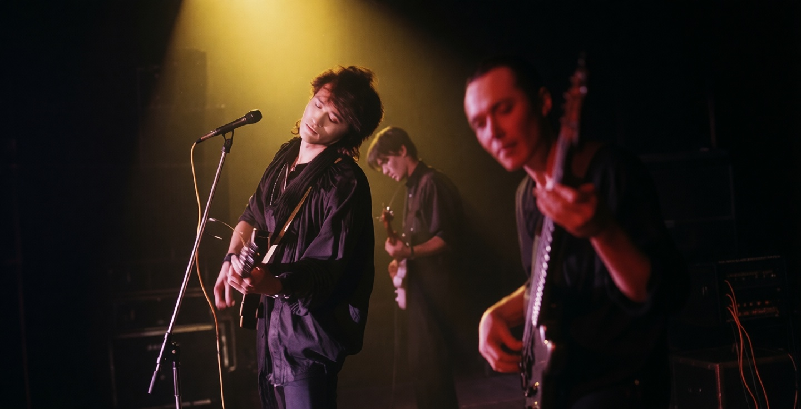
Кино навсегда
история, которая звучит
Символ эпохи
Москва, Лужники. Огромный стадион. 24 июня 1990 год. Последний концерт, завершающий тур по городам. И 70-тысячная толпа, которая скандирует песни, глубоко проникающие внутрь и вызывающие мурашки. Виктор Цой, ставший голосом поколения и символом того, что сидело внутри у каждого советского гражданина.
Через неделю Виктор погиб в автокатастрофе. Его Москвич-2141 вылетел на встречную полосу и врезался в «Икарус».
Эту группа играет в наушниках у подростков, взрослые люди всегда включают её на приемниках в машине, и ни одна посиделка у костра не может обойтись без «Группы крови на рукаве» под мелодии гитары. Это «КИНО», которое стало символом эпохи и настоящим феноменом, украсившим жизнь людей на постсоветском пространстве. Группа, которая продолжает звучать в наших сердцах.
Мы решили создать музей-экспозицию на ваших экранах. Здесь вы можете ознакомиться с историей создания, участниками групп в разные временные отрезки, дискографию. Найти архивные материалы и увидеть, чем занимается группа сейчас.
Основной акцент — на лидере группы. Но лидер никогда не бывает один. Рядом с ним всегда находятся люди, которые наполняют и вдохновляют его.
От «Гарина и Гиперболоидов» к «Кино»
Люди, которые сделали «Кино»
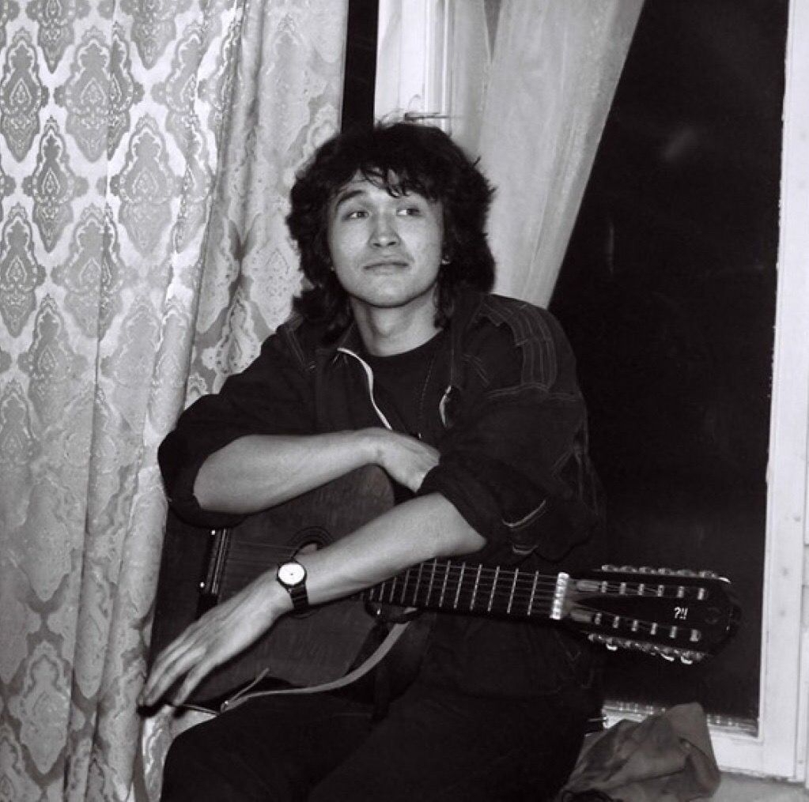
Виктор Цой
Основатель и лидер группы.
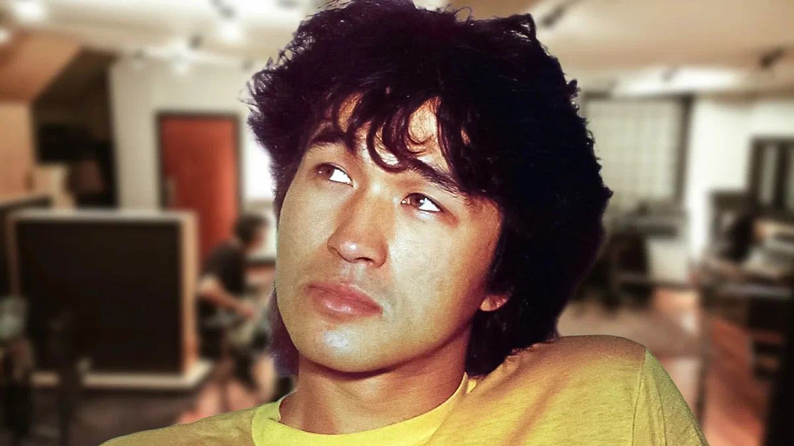
Единственный ребенок в семье инженера корейского происхождения и преподавательницы физкультуры. Рос обычным советским ребенком, тяготел к живописи и музыке. Увлекался западными группами: «The Cure», «Duran Duran», «David Bowie», «The Beatles», «The Doors», «Sex Pistols». Его кумирами были Брюс Ли, Высоцкий и Михаил Боярский. Уже в 8 классе организовал свою группу, пытался писать свою музыку. Из воспоминаний отца Виктора: «Запрется в ванной, чтобы мы не слышали, и играет. У него тогда голос «ломался», вот он и стеснялся».
Лирический образ в песнях Виктора Цоя, окончательно сформировавшийся в поздних альбомах группы «Кино», — человек, наполненный стремлением к свободе и переменам в сознании людей, обладающий твёрдостью духа, бесстрашием и неуклонно стремящийся к победе.
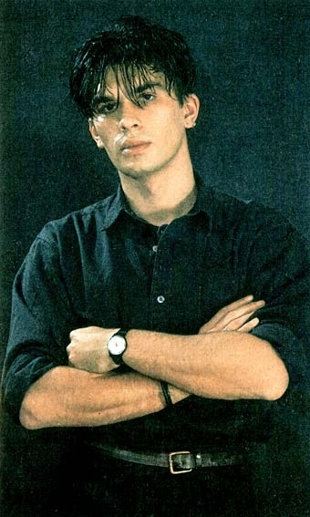
Юрий Каспарян
Музыкант, гитарист группы «КИНО». Один из создателей и главное действующее лицо проекта «Симфоническое Кино».
Ближайший друг, соратник Виктора. Когда они познакомились, Юрий ещё не особо хорошо играл на гитаре, из-за чего Цоя отговаривали от сотрудничества. Но тот отвечал: «Ничего, молодой, научится». Позже он превратился в настоящего гения, который создавал пронзительные и мелодичные гитарные партии, благодаря которым группа стала символом эпохи. Чего только стоит гитарный рифф в композиции «Спокойная ночь».
После смерти Виктора погрузился в эзотерику и философию, ушёл из музыки. Но музыка так и не смогла уйти от него, и в начале нулевых он создал группу «Ю-Питер» совместно с Бутусовым. Сейчас его гитара продолжает дело группы и погружает в мир «КИНО» новых слушателей.
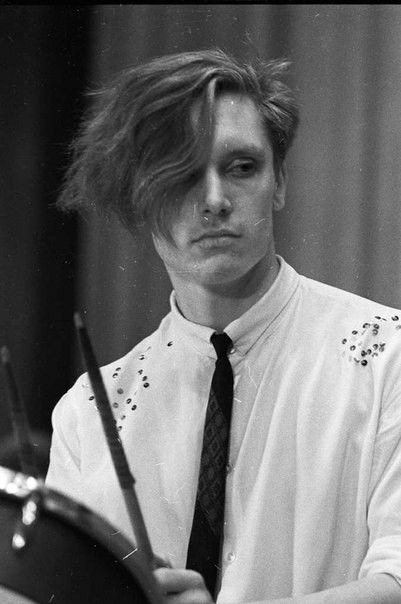
Георгий Гурьянов
Художник, барабанщик группы «КИНО».
С 1984 года Георгий Гурьянов был ударником, аранжировщиком и бэк-вокалистом группы «КИНО». Взял псевдоним “Густав”. Благодаря нему, группа стала известна своим особенным романтическим стилем и имиджем, его считали законодателем вкуса, настоящий Петербургский денди. Отличался игрой на ударных стоя, потому что сидящего барабанщика не видно. После смерти Виктора ушёл из музыки и погрузился в живопись, его произведения в середине нулевых стали одними из самых востребованных и дорогих на рынке искусства России. Умер в 2013 году из-за болезни.
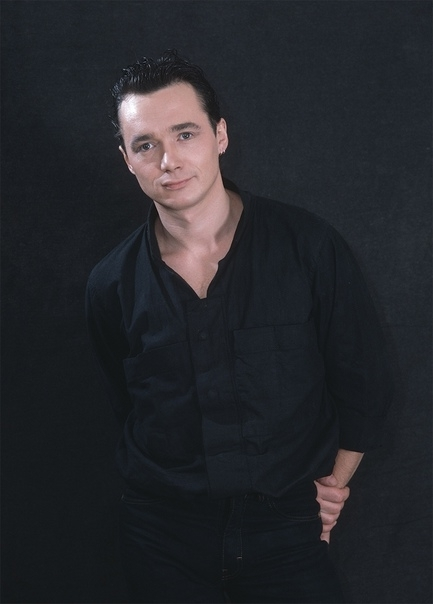
Игорь Тихомиров
Музыкант, звукорежиссер, продюсер, бас-гитарист группы «КИНО», участник групп «Джунгли» и «ДДТ».
С приходом Игоря Тихомирова группа «КИНО» обрела свой «золотой» состав. Интересен сам момент прихода Игоря Тихомирова в группу. Случилось это в главной точке схождения всего ленинградского андеграунда, когда Александр Титов объявил о своем уходе Цою, после чего Виктор подошел к другому столику, за которым стоял Тихомиров, и предложил музыканту играть вместе.
Игорь согласился на месте, ему пришлось за пару дней учить весь репертуар группы. Сейчас он исполняет песни «КИНО» совместно с Каспаряном и Титовым.
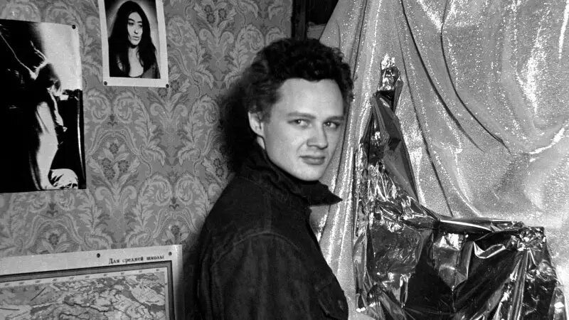
Алексей Рыбин
Музыкант, участник первого состава «КИНО».
Один из основателей группы, который оказал большое влияние на коллектив и лидера. Благодаря дружбе со Свином и рок-тусовке, познакомился с Виктором. У них сошлись взгляды, они вместе прошли первый этап становления: квартирники, выступление в Ленинградском рок-клубе и запись «45». Во время работы над альбомом они разошлись во мнениях, поссорились и больше не общались. Уехал в Москву, а потом и в США. По возвращению начал заниматься литературной, журналистской деятельностью. Используя изначальное название, в 2019 году организовал группу, в которой исполняет кавер-песни, к которым имеет прямое отношение.
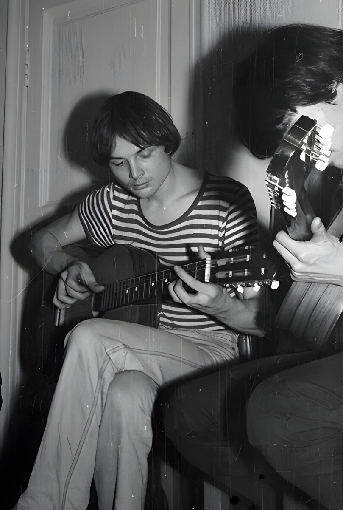
Александр Титов
Музыкант, басист группы «КИНО» и группы «Аквариум».
Многие представители Ленинградского рок-клуба в разное время участвовали как в выступлениях «КИНО», так и в процессе записи альбомов. С самого начала значительной была поддержка музыкантов группы «Аквариум», которые выступали с Виктором с 1982 года, но именно Александр Титов стал полноценным участником обеих групп («КИНО» и «Аквариум») в период с 1984 по 1986 год. Из-за невозможности совмещать графики выступлений он вынужден был выбирать и покинул группу «КИНО».
Александр участвовал в записи альбомов «Начальник Камчатки», «Это не любовь» и «Ночь».
Легендарные альбомы
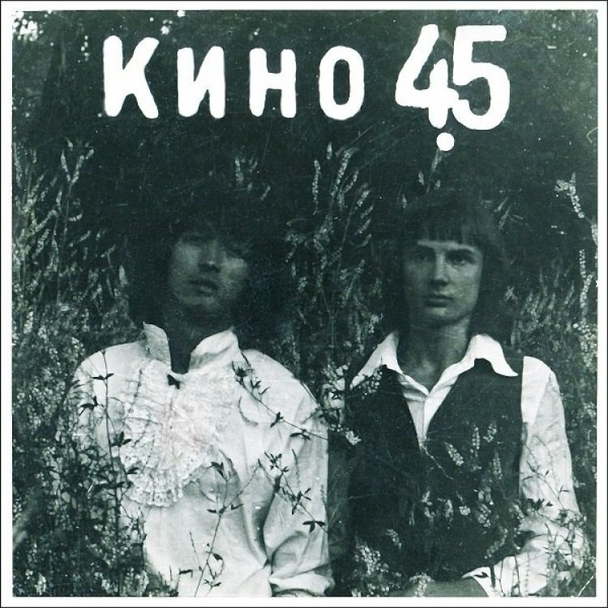
«45» (1982)
Первый альбом группы. Получил такое название, потому что по времени звучания он длился 45 минут в первоначальной версии, с песней «Асфальт». Потом песню посчитали неудачной и убрали. А название оставили. Стал одним из первых альбомов в истории русской рок-музыки, при записи которого использовалась драм-машина.
Краткая история
Первый альбом группы. Название связано с первоначальной длительностью записи — 45 минут. Альбом стал одной из ранних вех русского рока.
Песня «Мои друзья» вдохновлена панк-периодом в жизни Цоя и его общением с Андреем Пановым «Свином» и его окружением. Есть отсылки к конкретным ленинградским адресам. Пивной ларек — конкретное заведение на проспекте Космонавтов.
«46» (1983)
Цой и Каспарян записали альбом «Сорок шесть» с помощью Алексея Вишни. Запись была сделана на домашней студии Вишни, и альбом был выпущен без одобрения Андрея Тропилло, продюсера.
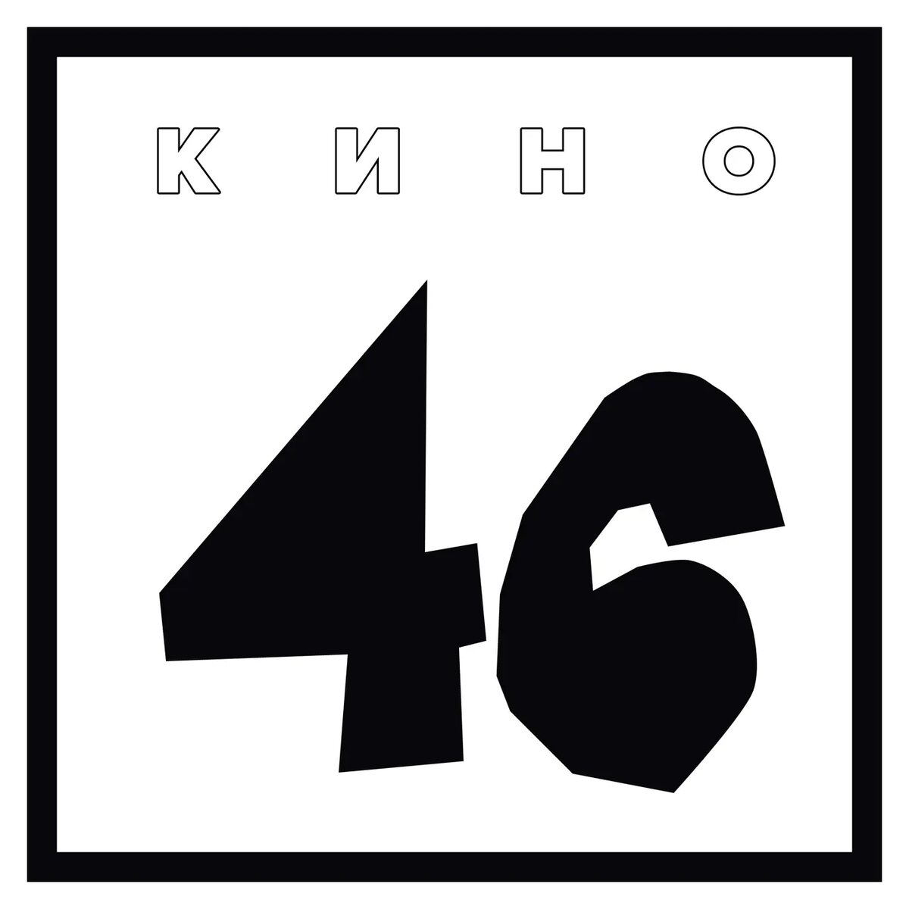
Краткая история
Альбом воспринимался как репетиционная лента, а не как полноценный релиз. Цой не признавал его официальным альбомом «КИНО».
Песня «Транквилизатор» была создана после самого тяжёлого периода жизни Цоя. В 1983 году на адрес родителей пришла повестка в военкомат. Виктор, понимавший риски ухода в армию в период Афганской войны, решил прибегнуть к радикальному методу — имитации маниакально-депрессивного психоза. Он попал в психиатрическую больницу №2, где побывали Бродский, Даниил Хармс и другие представители петербургской интеллигенции. Там, среди уколов, процедур и разговоров с врачами, пытавшимися «вывести его на чистую воду», он пережил внутренний перелом. Марианна Цой вспоминала: «Когда его выписывали, я еле дотащила Витю до машины. Он выглядел прозрачным. А ночью я увидела его на кухне — в темноте он что-то писал карандашиком. Это был текст Транквилизатора».
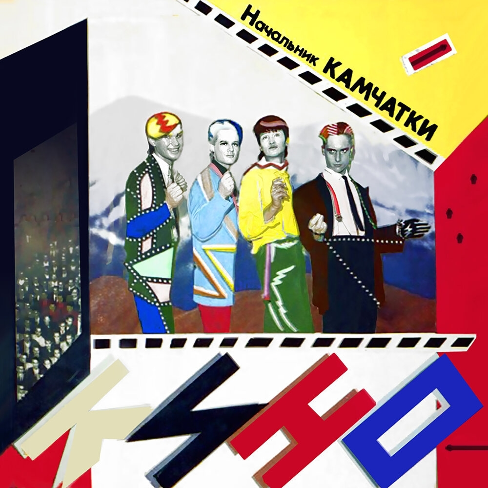
«Начальник Камчатки» (1984)
Третий альбом группы «Кино». Альбом наполовину состоит из песен из черновика «46». Название альбома является отсылкой к фильму «Начальник Чукотки» — про молодого человека, которого послали на Чукотку бороться против капиталистов.
Краткая история
Запись альбома проходила спонтанно, без репетиций, в студии царил беспорядок. Виктор Цой работал над альбомом после выхода из психиатрической больницы. В записи участвовали музыканты из разных групп, включая Александра Титова и Георгия Гурьянова. Барабанщиком был окончательно выбран Георгий Гурьянов, а также использовались драм-машина и перкуссия. Здесь Виктор находит свой собственный стиль. Запись альбома заняла две-три недели.
«Каждую ночь» была написана летом 1983 года. Было дождливо, Виктор и его жена, Марианна, мечтали оказаться на берегу тёплого моря. Песня исполнялась в разные годы на квартирниках.
«Это не любовь» (1985)
Альбом отличается от предыдущих работ группы более лёгким и звонким звучанием, а также лирической тематикой текстов, посвящённых любви и отношениям. Автором обложки альбома стал сам Цой.
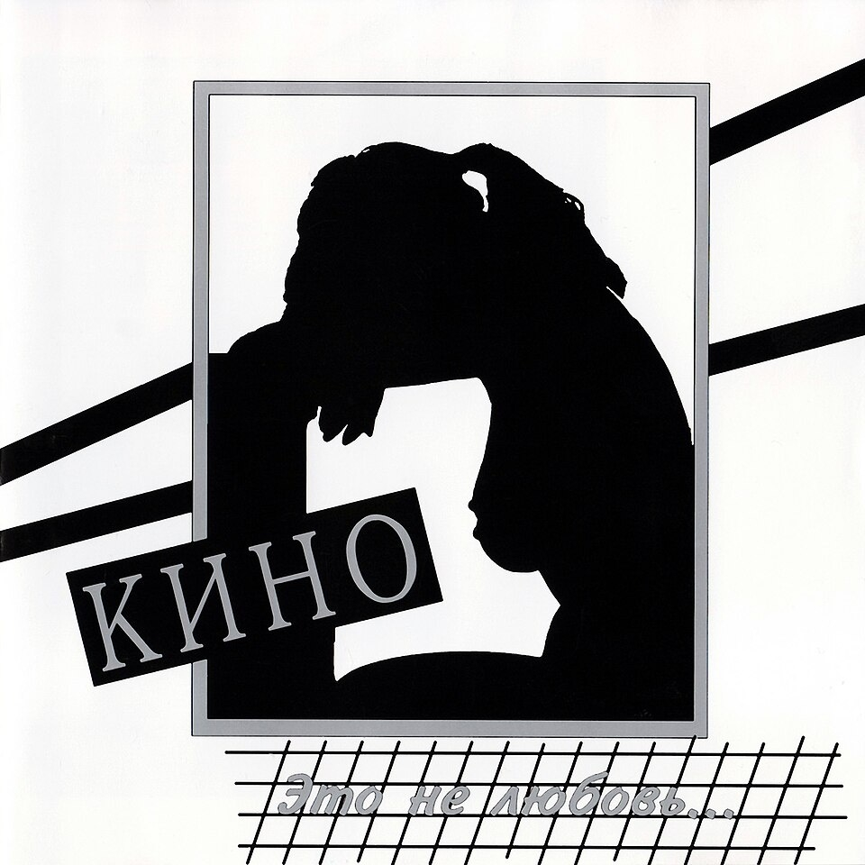
Краткая история
В качестве материала для обложки послужила фотография девушки из иностранного журнала об искусстве.
Песня «Это не любовь» дала название пластинке. Это лирическая композиция про несчастную любовь и мечты.
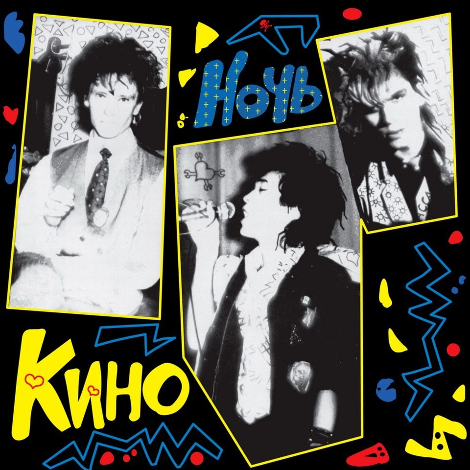
«Ночь» (1986)
«Ночь для меня — это особое время суток, когда исчезают все отвлекающие факторы. Но не только. Ночь наполняет меня ощущением мистики» — Виктор Цой.
Краткая история
Альбом стал первым официальным релизом «Кино», изданным московской фирмой «Мелодия».
«Группа крови» (1988)
Группа «КИНО» в её целостном культовом формате началась именно с альбома «Группа крови». Альбом получил широкую известность как в СССР, так и за рубежом.
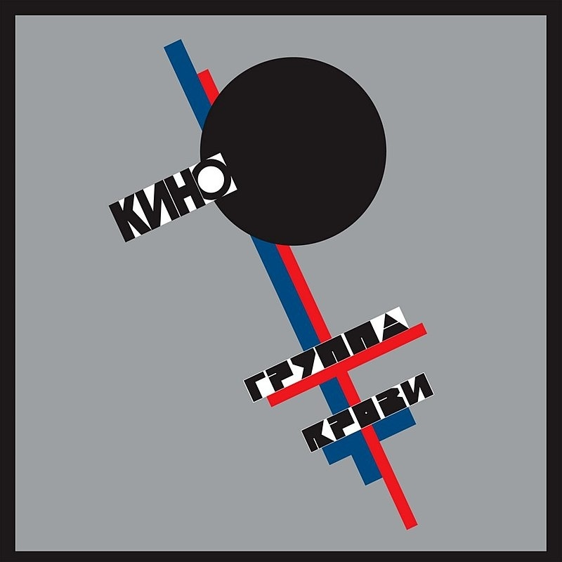
Краткая история
В 2007 году редакция журнала Rolling Stone Russia включила песню «Группа крови» в свой список «40 песен, изменивших мир».
Обложка альбома оформлена рисунком в духе супрематизма. За основу был взят плакат Казимира Малевича к немому фильму Фрица Ланга «Доктор Мабузе, игрок». Этот плакат Андрей Крисанов увидел в Русском музее, где он работал в котельной и где в то время проходила выставка искусства 1920-1930-х годов.
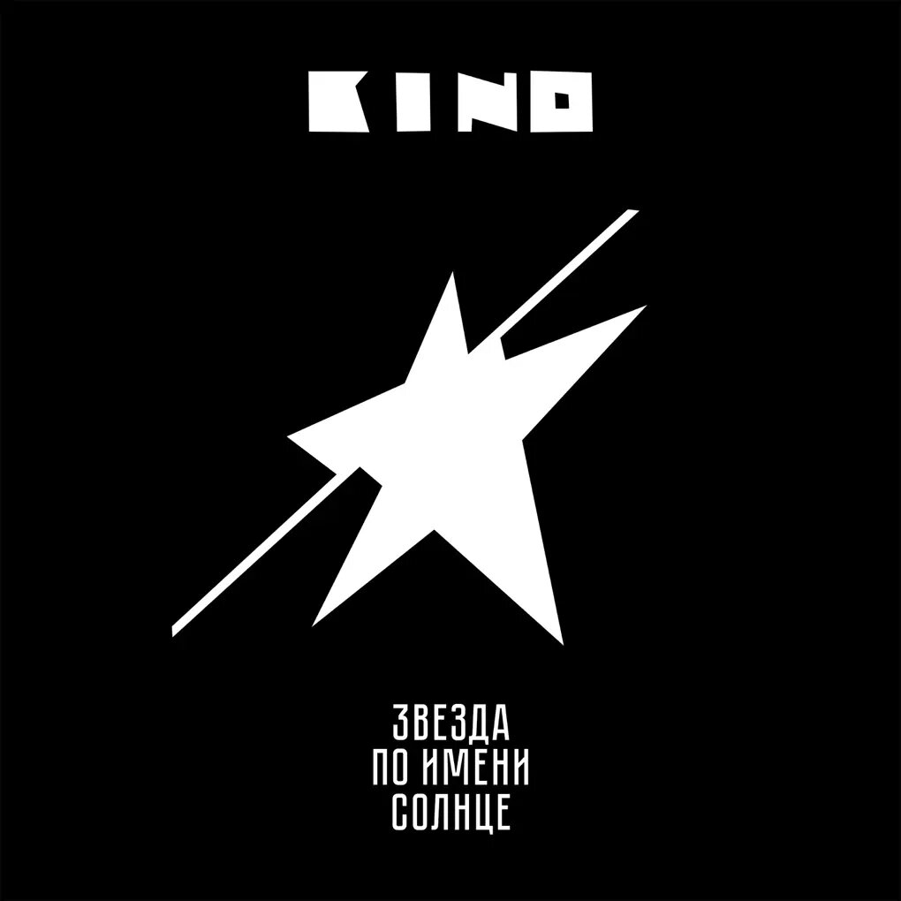
«Звезда по имени Солнце» (1989)
Черновая версия была записана в квартире Георгия Гурьянова. Окончательный вариант записывался на студии Валерия Леонтьева в Москве.
Краткая история
Альбом концептуальный, с текстами о личной борьбе и размышлениях о смысле жизни. Звучание мягче и сглаженнее, чем у предыдущих альбомов. Альбом получил название «Звезда по имени Солнце» после записи финальной версии.
«Звезда по имени Солнце» — песня об обречённости героя, о том, что всегда должен быть тот, кто пойдёт за звездой по пути, ведущему к смерти.
«Чёрный альбом» (1991)
Последний официальный альбом «КИНО», записанный уже без Виктора. Осенью 1990 года он был выпущен без названия, но впоследствии за ним закрепилось народное название «Чёрный».
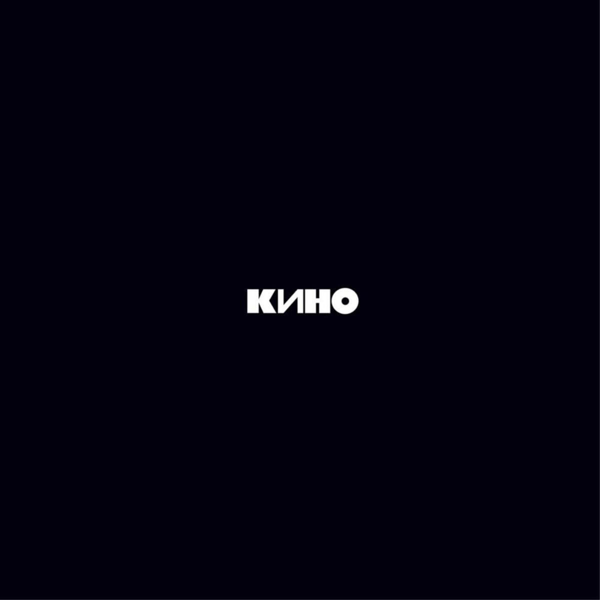
Краткая история
Альбом создавался на основе уцелевшего материала. Были «спасены» записанный ранее голос Цоя и звук его гитары. Музыкантам удалось достичь баланса: сохранить первоначальное звучание песен и при этом сделать профессиональную запись с качественными аранжировками.
«Кончится лето». По мнению филолога Елены Шаджановой, одна из главных тем песни — отсутствие как внешних, так и внутренних стимулов к действию. При этом лирический герой не имеет возможности вернуться назад — он зашёл в тупик. Текст песни может отражать чувство приближающейся смерти.
Группа в сегодняшнем звучании
В 2010 году, в рамках концерта «20 лет без Кино», впервые прозвучали симфонические инструментальные версии песен группы, оркестровки сделал Игорь Вдовин. Затем два года продолжалась работа над полноценной концертной программой; на этом этапе к проекту подключился гитарист «Кино» Юрий Каспарян, продюсером проекта выступил сын Виктор Цоя — Александр Цой. Проект «Симфоническое Кино» был представлен 21 июня 2012 года, к 50-летию со дня рождения Виктора Цоя.
Музыканты КИНО снова играют вместе на одной сцене. Голос Виктора Цоя был оцифрован с оригинальных записей КИНО и звучит на концертах. А на сцене — басисты Александр Титов и Игорь Тихомиров, а также бессменный гитарист группы Юрий Каспарян.
Также, в Севкабель-порту открыли выставку «ВИКТОР ЦОЙ. ЛЕГЕНДА». Экспозиция занимает почти три тысячи квадратных метров. В тринадцати залах можно увидеть уникальную коллекцию личных вещей музыканта, редкие документы, гитары, костюмы, картины, видеозаписи из семейного архива. А еще услышать любимые песни, знакомый голос и малоизвестные кадры семейной хроники Цоя.
Выставка в Севкабель Порту — это хроника рождения легенды, кино, которое при жизни музыканта так и не было снято. Как актер Виктор Цой свел в одну систему координат Джеймса Дина и Брюса Ли, в музыке соединил стилистику и звучание звезд Новой волны и Ленинградского рок-клуба, в живописи стал преемником уличного искусства Кита Харинга и Жана-Мишеля Баскии. Все грани таланта Виктора Цоя найдут воплощение в экспозиции.